O mnie
Firma KWrap specjalizuje się w zabezpieczeniu lakieru oraz zmianie koloru w pojazdach oraz ich poszczególnych elementach takich jak lusterka, szyby czy reflektory. KWrap zajmuje się również zleceniami nietypowymi.Zabezpieczam również łodzie, kaski motocyklowe a nawet telefony czy okna w budynkach. Dodatkową usługą wykonywaną przez firmę KWrap jest wyciąganie wgnieceń bez konieczności lakierowania.
Dlaczego warto wybrać firmę KWrap?
- Wieloletnie doświadczenie
- Potwierdzone kwalifikacje
- Profesjonalne doradztwo
- Dbałość o szczegóły
- Najwyższej klasy materiały
- Wiele usług w jednym miejscu
Usługi
KWrap oferuję usługi takie jak
- Przyciemnianie szyb
-  Polerowanie reflektorów
-  Zmiana kolorów pojazdów
-  Zabezpieczenia PPF w pojazdach
-  Drobne korekty lakieru
-  Wyciąganie wgnieceń PDR